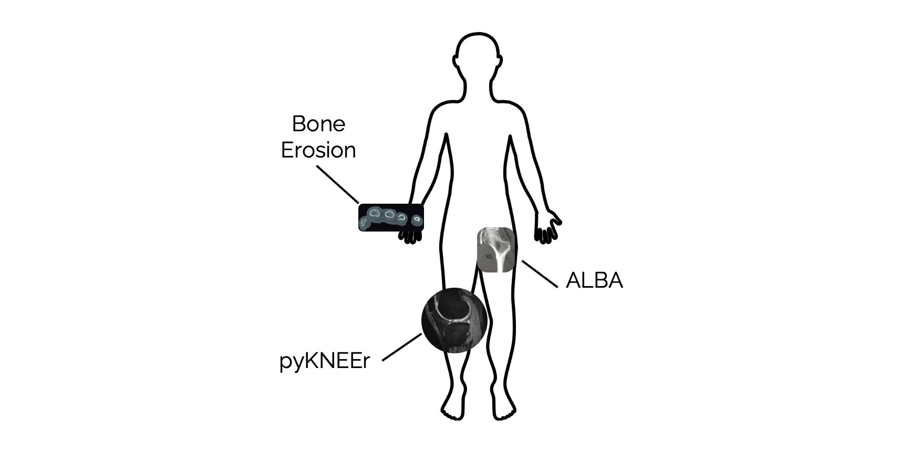

About
Contents
About¶
This page contains our motivations, how we got here, and who we are
Workflows in quantitative musculoskeletal imaging¶
In quantitative musculoskeletal imaging, we aim to extract quantitative information from medical images of bones and joints to investigate musculoskeletal diseases such as osteoporosis and osteoarthritis.
Our computational workflows have a common structure:

We acquire (or are provided) medical images of the musculoskeletal system, either at the organ level (resolution in the order of mm) or tissue level (resolution in the order or µm). Images are mainly acquired with computed tomography (CT) techniques or magnetic resonance (MR) techniques
We preprocess images to extract their characteristics
We segment (i.e. label) images to extract the organ/s of interest, including bones and cartilages. Often, we register images (i.e. warp to a template) to find correspondences within or between subjects
We calculate metrics to quantify organ or tissue morphology, structure, chemical composition, and mechanical response. Common metrics include tissue thicknesses, calcium or xxx content, and stresses and strains. Depending on the research question we want to answer, we use these metrics to analyze subjects’ longitudinal changes or differences across populations, or to compare or validate new algorithms.
Our final aims are to answer specific biological questions that help us understand musculoskeletal diseases, and to create computational tools that allow us to investigate diseases in a reliable and robust way. Variations in workflow structures are mainly due to computational parameters in algorithms, methodological techniques, and choice of metrics.
Why a community for open and reproducible research?¶
Although we share the same research interests and similar workflow structures, we experience an extreme computational fragmentation at a community level. Very often, workflows in our labs consist of a combination of proprietary software, mainly provided by scanner producers, and in-house algorithms, written either in proprietary languages (e.g. Matlab) or open source languages (e.g. C++, Python). This code fragmentation translates into several challenges. When using proprietary software, we often do not have access to algorithm implementations and parameter values. This can limit not only our knowledge of the computational procedures and outcome, but also the adaptation of methodologies to specific cases or the extension to new studies. In addition, the use of different programming languages creates challenges when combining code from different laboratories or when dealing with file format compatibility. Consequences include limited reuse of existing code, absence of common metric implementations, and thus challenges in creating long term collaborations, which can lead to potential deceleration of discoveries.
How did the community start?¶
We have started formal discussions to look for pragmatic solutions . During the 22nd International Workshop on Quantitative Musculoskeletal Imaging (QMSKI) held in February 2019, we organized two workshops. In the workshop Working group on standardization of quantitative metrics for 3D imaging organized by Andrew Burghardt, Philippe Schneider, and Steven Boyd, discussion was focused on how to create a standardized framework for quantitative measurements of bone structure. Specifically, we talked about open repositories for reference data used to test and compare different and new algorithms, frameworks for metric implementations, and the creation of a consensus-building body. In another workshop Hands-on transparent QMSKI research: Open data, reproducible workflows, and interactive publications organized by Serena Bonaretti, the discussion was focused on the need of open and reproducible workflows and how to practically implement them: open data repositories, open source programming languages (e.g. Python), reproducible workflows using computational notebooks (e.g. Jupyter Notebook), and reproducible publications. From these workshops, it emerged that it is becoming more and more crucial to develop tools to create, organize, and maintain common software and data in the musculoskeletal community.
Our current computational projects¶
We are focused on creating:
pyMSK, a core package with code to read and write images, visualize images, calculate bone and cartilage metrics
Organ-specific packages, built on top of pyMSK, which are specific for each organ:

Bone erosion evaluation from HR-pQCT images¶
By Kathryn Stok, Sarah Manske, Andrew Burghardt, Pholpat Durongbhan
As the technical co-leads of the Study grouP for xtrEme Computed Tomography in Rheumatoid Arthritis (SPECTRA), we are interested in developing open source workflows for analysis of high-resolution peripheral quantitative computed tomography (HR-pQCT) images.
The initial goal is to build notebooks capable of:
Importing, visualizing, characterizing and writing HR-pQCT images
Segmentation and volumetric analysis of bone erosions, based on previously developed algorithms (Topfer et al. 2014)
Current workflows are primarily conducted using the manufacturer’s software in a proprietary image format, or are custom packages developed for use by the developer’s lab only. The intention is that these preliminary notebooks will lead to further development of image processing workflows for the bone imaging research community, particularly those investigating arthritis. Development of new pipelines and metrics has been inhibited by the limited functionality of this software. We aim to take advantage of more versatile segmentation and registration tools available through ITK. Our overarching goal is to improve the accessibility of high resolution CT image analysis tools in order to improve research reproducibility and create an environment through which the research community can easily share developments.
Knee cartilage segmentation¶
By Dženan Zukić, Matthew McCormick, Marc Niethammer, Julio Carballido Gamio, Serena Bonaretti
We are developing open source High-throughput Applications for Skeletal Imaging. The goal of the project is the development of automated, high performance 3D bone and cartilage image characterization tools, which are accessible through a web browser. A broad range of researchers and clinicians can leverage these tools to obtain high-throughput, reproducible biomarkers for statistically sensitive research studies. The ultimate goal is to lead to better preventive strategies and progression monitoring for osteoarthritis and related diseases.
Preliminary results (as of October 2020) include automated segmentation of femurs in μCT of mice, incorporation of registration package Elastix into image processing toolkit ITK as a remote module ITKElastix, a proof of concept web application which allows placing landmarks and doing landmark registration and landmark-initialized registration.
We are also developing human knee MRI cartilage segmentation and statistical characterization methods. These deep learning-based methods are evaluated on the 4,796 subjects from the Osteoarthritis Initiative.
Evaluation of hip mechanics¶
By Lorenzo Grassi, Gianluca Iori, Enrico Schileo, Fulvia Taddei, Gianluigi Crimi
Workflow for the continuum level¶
The vision is to have an open source workflow for obtaining a subject-specific finite element (FE) model of a human femur starting from clinical computed tomography (CT) images. Such models can be used for structural analysis aimed at predicting the mechanical competence of bones for, e.g., assessment of fracture risk. All steps of the workflow should have been previously validated. There is a strong motivation to build an open and reproducible workflow to compute femoral strain and strength from CT data. In fact, despite the large use of such models, witnessed by hundreds of publications including applications to clinical cohorts @ref (ref to be added: Kopperdahl et al. 2014, Falcinelli et al. 2014, Nishiyama et al. 2013, Keyak et al. 2011), there is still no consensus about how a model should be built (e.g. voxel-derived vs. boundary reconstruction), loaded (e.g. single falling condition vs. loading spectrum), and evaluated for strength (e.g. linear vs. a broad range of non-linear failure models). Almost all the sources of fragmentation cited in the introduction concur to hinder full reproducibility of published models. Consequently, diverse workflows continue to appear, and even commendable efforts to compare the performance of different modelling strategies on the same data contain clearly inappropriate workflows (ref to be added Kluess et al.2019), thus denoting the absence of standardization of basic methodologies. We hope that our effort in producing an open and reproducible workflow could also foster a parallel sharing of imaging, experimental and clinical data, to obtain merging and cross-validation of different data sets and eventually deblur the scientific debate in our field. The workflow will rely to the greatest possible extent on open source external software, and on freeware tools when open source solutions are not available. An additional focus will be on keeping the whole procedure as automatic as possible, from the processing of the clinical images to the post-processing of the FE model predictions.
The workflow is represented in figure below:

The segmentation will be based on an automatic method recently proposed by Väänänen and Grassi et al. 2019. In brief, morphological operators and filters are used to separate the femur from the pelvis and obtain an approximate segmentation of the outer surface of the femur. Then, the tool Stradview (Treece and Gee, 2015) is automatically called to refine the segmentation of the outer layer and estimate the local cortical thickness at each point. The bone mineral density (BMD) for the cortical layer will also be assessed by Stradview and used later in the workflow. Meshing is automatically performed from the segmented triangulated surfaces using MeshPy. Unstructured tetrahedral meshes will be built in a first implementation, with the possibility to add hexahedral meshing in the future. Element size will be 2-3 mm according to the validated models from Schileo et al. 2014. The material mapping will be performed by calling the freeware software Bonemat (Taddei et at. 2007) that in its latest release can handle mapping of cortical bone properties from Stradwiew estimates (@add ref here). Automatic densitometric calibration will be available for at least some widely used calibration phantoms (e.g. European Forearm and Spine Phantoms) from the open source ALBA: Agile Library for Biomedical Applications. Bonemat will be called from within the Jupyter Notebook, and in perspective the whole ALBA library will be wrapped through tools like Pybind to be accessible directly from a Jupyter Notebook. As a result, the models will have heterogeneous material properties based on the underlying CT values of each element. The basic material model will include isotropic linear elasticity. The FE solution module will include identification of the anatomical coordinate system for the femur, which will serve to define a so-called neutral position. Two classic loading configurations resembling single-leg-stance and a fall to the side can then be automatically chosen and simulated. Femoral strains are computed and strength is calculated based on the validated method from Schileo et al. 2014. Bone strain and strength estimates will be available for post-processing.
Workflow for the tissue level¶
Tissue level micro-Finite Element (microFE) models derived from laboratory or synchrotron microCT images can provide non-destructive assessments of the bone mechanical properties. The technique is used to investigate the effect of pathologies, treatment and remodelling on the mechanical response of bone at the tissue level, and is applied both to human and animal samples. Linear elastic microFE simulations are implemented to back-calculate the tissue elastic modulus (Bayraktar et al. 2004), understand deformation mechanisms (Zauel et al. 2005), or even predict failure (Pistoia et al. 2002) of cancellous bone, as well as to estimate the stiffness of whole bones from small animals (Pistoia et al. 2002). Several groups highlighted the importance of an accurate description of boundary conditions and of validating model predictions with experimental measurements (e.g. with Digital Volume Correlation). Nevertheless, the verification of microFE procedures is hindered by:
A general absence of standardized, open procedures,
The presence of multiple, non-open source FE solvers and
Limited access to high-performance imaging and computing facilities.
The development of open-source and reproducible microFE workflows could facilitate the validation of biomechanical studies and strengthen the synergy with other fields of microFE application such as concrete, fiber composites and porous materials research.
The workflow (link to JC|MSK nb_gallery) illustrates the generation, solution and analysis of results from a linear microFE model of bone tissue derived from microCT 3D data. The pipeline is composed of:
Image pre-processing steps
A core module for the generation of a microFE model from the pre-processed dataset
Model solution with an open-source FE solver
Post-processing of results and 3D visualization routines.
The preprocessing starts by reading a microCT stack of 8bit TIFF slices. The 3D volume can be cropped and aligned according to the desired direction of load. A binary mask of the bone tissue is safely generated applying a global threshold (Kim et al. 2007) (e.g. (Otsu, 1979, Ridler and Calvard, 1978, or the ISODATA method) and multiplied to the unsegmented stack to remove the image background. Voxel grey values (GV) are converted to bone mineral density (BMD) applying a calibration rule which should be verified periodically through scanning of a hydroxyapatite phantom. The GV-to-BMD calibration is required for the mapping of the tissue Young’s modulus from local density values. If constant tissue properties are applied, the binary mask of the bone material is directly converted to a microFE model instead. Embedding layers (e.g. dental cement) and steel caps can be added to simulate the conditions of mechanical testing. The Python script stack2Abaqus.py converts the preprocessed 3D dataset to a microFE input model file for solution with the open-source code CalculiX or with the commercial software ABAQUS. Image voxels are directly converted to 8-node hexahedral brick elements. The user can define either constant material properties or separate material mapping laws for different GV ranges. In this way, different material properties can be applied, for example, to bone tissue and steel or embedding material. Automatically generated boundary node sets are used to prescribe a uniaxial compression test up to 1% strain. The model is solved with a multi threaded version of CalculiX. The sample stiffness is calculated from the displacements and reaction forces written by CalculiX in separate output files. The visualization of the deformed 3D structure in Paraview is also illustrated after conversion with ccx2paraview.
Who we are¶
We are a group of researchers in musculoskeletal imaging who are committed to create tools for open and reproducible research pipelines.
Here we are (in alphabetical order):


Leonardo Barzaghi
Mondino Foundation Pavia
Italy


References¶
Bayraktar HH, Morgan EF, Niebur GL, Morris GE, Wong EK, Keaveny TM. Comparison of the elastic and yield properties of human femoral trabecular and cortical bone tissue. Journal of Biomechanics, Volume 37, Issue 1, January 2004, Pages 27-35. https://doi.org/10.1016/S0021-9290(03)00257-4
Kim CH, Zhang H, Mikhail G, Stechow DV, Müller R, Kim HS, Guo XE. Effects of Thresholding Techniques on μCT-Based Finite Element Models of Trabecular Bone. Journal of Biomechanical Engineering, Volume 129, Issue 4, August 2007, Pages 842-848. https://doi.org/10.1115/1.2746368
Otsu N. A threshold selection method from gray-level histograms. IEEE transactions on systems, man, and cybernetics, Volume 9, Issue 1, January 1979, Pages 62-66.
Oliviero S, Giorgi M, Dall’Ara E. Validation of finite element models of the mouse tibia using digital volume correlation. Journal of the Mechanical Behavior of Biomedical Materials, Volume 86, October 2018, Pages 172-184. https://doi.org/10.1016/j.jmbbm.2018.06.022
Pistoia W, Van Rietbergen B, Lochmüller EM, Lill CA, Eckstein F, Rüegsegger P. Estimation of distal radius failure load with micro-finite element analysis models based on three-dimensional peripheral quantitative computed tomography images. Bone, Volume 30, Issue 6, June 2002, Pages 842-848. https://doi.org/10.1016/S8756-3282(02)00736-6
Ridler TW, Calvard S. Picture thresholding using an iterative selection method. IEEE Transactions on Systems, Man, and Cybernetics. Volume 8, Issue 8, August 1978, Pages 630-632.
Schileo E, Balistreri L, Grassi L, Cristofolini L, Taddei F. To what extent can linear finite element models of human femora predict failure under stance and fall loading configurations? Journal of Biomechanics, Volume 47, Issue 14, 7 November 2014, Pages 3531-3538. https://doi.org/10.1016/j.jbiomech.2014.08.024
Taddei F, Schileo E, Helgason B, Cristofolini L, Viceconti M. The material mapping strategy influences the accuracy of CT-based finite element models of bones: An evaluation against experimental measurements. Medical Engineering & Physics, Volume 29, Issue 9, November 2007, Pages 973-979. https://doi.org/10.1016/j.medengphy.2006.10.014
Töpfer D, Finzel S, Museyko O, Schett G, Engelke K. Segmentation and quantification of bone erosions in high-resolution peripheral quantitative computed tomography datasets of the metacarpophalangeal joints of patients with rheumatoid arthritis. Rheumatology, Volume 53, Issue 1, January 2014, Pages 65–71. https://doi.org/10.1093/rheumatology/ket259
Treece GM, Gee AH. Independent measurement of femoral cortical thickness and cortical bone density using clinical CT. Medical Image Analysis, Volume 20, Issue 1, February 2015, Pages 249-264. https://doi.org/10.1016/j.media.2014.11.012
Väänänen SP, Grassi L, Venäläinen MS, Matikka H, Zheng Y, Jurvelin JS, Isaksson H. Automated segmentation of cortical and trabecular bone to generate finite element models for femoral bone mechanics. Medical Engineering & Physics, Volume 70, August 2019, Pages 19-28. https://doi.org/10.1016/j.medengphy.2019.06.015
Zauel R, Yeni YN, Bay BK, Dong XN, Fyhrie DP. Comparison of the Linear Finite Element Prediction of Deformation and Strain of Human Cancellous Bone to 3D Digital Volume Correlation Measurements. Journal of Biomechanical Engineering, Volume 128, Issue 1, February 2006, Pages 1-6. https://doi.org/10.1115/1.2146001